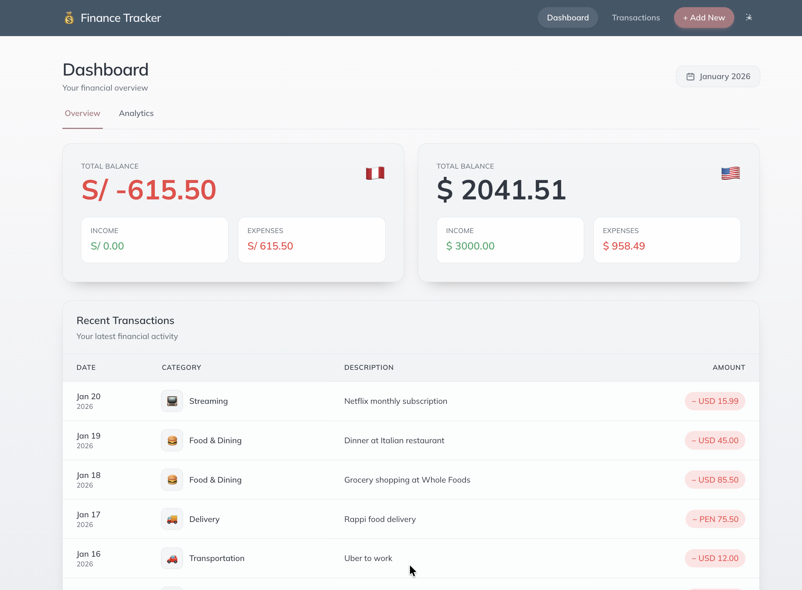

Finance Tracker
Django 5.2
PostgreSQL
Chart.js
Tailwind CSS
Railway
Production-ready personal finance dashboard with multi-currency support (PEN/USD), interactive analytics, and data export capabilities. Built with Django 5.2 and deployed on Railway with PostgreSQL.
- Multi-currency transaction tracking (PEN/USD)
- Interactive analytics dashboard with Chart.js visualizations
- Advanced filtering by date, category, type, and currency
- CSV & Excel export with formatting and styling
- Responsive mobile-first design with dark mode
- Comprehensive test suite (15 tests, 86% coverage)
✅ Production-ready
📊 86% test coverage
🎨 Dark mode